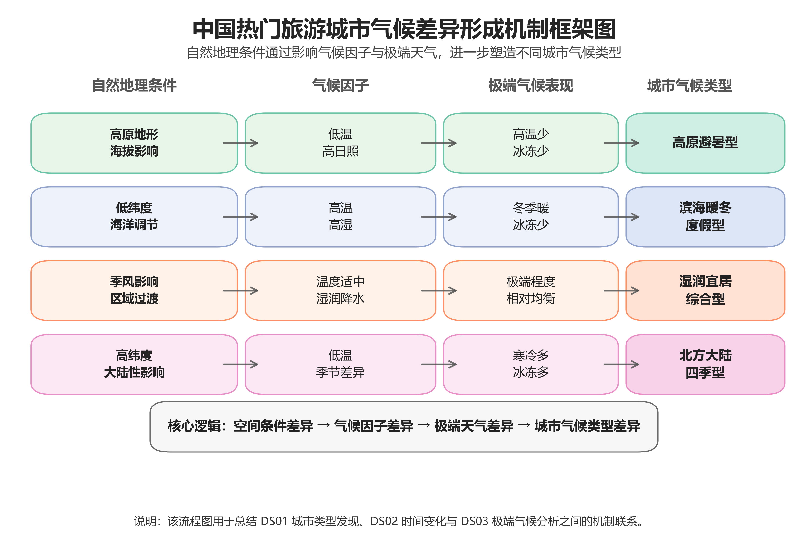

城市气候类型明显分化
20个热门旅游城市可以归纳为高原避暑型、滨海暖冬度假型、湿润宜居综合型和北方大陆四季型。
Data Visualization Project · 2016—2025
基于20个中国热门旅游城市的十年气象数据与近三年空气质量数据，从数据探索、城市类型、时间演化、极端气候到机器学习解释，分析城市气候差异如何形成，以及天气因素如何影响空气污染物变化。
本项目选取热门旅游城市作为研究样本，但核心问题不是“去哪里玩”，而是：中国不同城市为什么会形成不同的气候格局？极端天气如何分布？天气条件又如何影响空气质量？
热门旅游城市
天气数据跨度
天气日记录
AQI记录
核心图表
点击中国地图中的城市点位，查看该城市在总体、年度、月度和季节尺度下的气候与空气质量画像。
该模块基于 city_profile、city_year_profile、city_month_profile 和 city_season_profile 生成。
地图固定展示，不支持缩放和拖拽。点击城市点位后，下方城市气候档案会自动切换到对应城市。
assets/maps/china.json。如地图未显示，请在项目根目录运行
python -m http.server 8000 后访问 http://localhost:8000。
点击上方中国地图中的城市点位后，这里会显示城市档案。
DS00用于建立数据认知：哪些气候变量之间高度相关？污染物之间是否存在共同变化？关键指标在城市之间是否存在明显差异？

气候变量并非孤立变化，温度、降水、湿度和辐射共同构成城市气候结构。
气候指标体系具有稳定内部关系，可作为后续城市分类和趋势分析的基础。

颗粒物和部分气态污染物可能受到相似排放源影响，而臭氧更多依赖光照、温度和光化学反应条件。
空气污染具有多机制特征，不能用单一污染物解释所有空气质量变化。

城市之间的自然地理条件、气候背景和污染排放结构不同，导致关键指标分布差异明显。
20个城市具备明显可分性，适合进一步开展城市气候画像分析。
通过聚类与PCA降维，20个热门旅游城市被概括为四类气候类型：高原避暑型、滨海暖冬度假型、湿润宜居综合型和北方大陆四季型。
昆明、大理、丽江
低温、高日照、极端高温少。三亚、海口、深圳、广州、厦门
冬季温暖、湿度较高、冰冻少。上海、南京、杭州、成都、重庆等
气候条件综合均衡，湿润特征明显。北京、哈尔滨、乌鲁木齐
季节差异显著，寒冷与冰冻天气突出。
温度、湿度、空气质量和舒适度等综合指标共同塑造了城市气候画像。
20个热门旅游城市可以归纳为若干具有解释意义的气候类型。

海拔、纬度和海洋调节作用影响不同城市类型的气候优势。
不同城市类型适宜的旅游季节和环境优势并不相同。

城市气候类型与纬度、海陆位置和地形条件密切相关。
城市分类结果具有明确空间规律，并非随机分组。

不同城市类型的气候优势由自然地理条件和区域气候背景共同决定。
类型特征热力图解释了城市为何能被划分为四类气候画像。
DS02把城市画像放入时间维度中，观察2016—2025年气温变化、季节舒适度差异、近三年空气质量变化与极端天气趋势。

全球气候变暖和城市化热岛效应共同推动城市气温上升。
气候变暖已经成为我国热门旅游城市的共同趋势。

不同城市类型受到纬度、海拔和海洋调节影响，季节适宜性存在互补。
旅游城市的气候优势具有明显季节性，不能只看全年平均水平。

空气质量受城市排放结构、地形扩散条件和区域背景共同影响。
近三年空气质量总体稳定，但空间差异仍然明显。

气候变暖改变了温度分布，使高温事件更频繁、低温冰冻事件减少。
未来旅游城市需要更关注夏季高温风险和热舒适问题。
DS03聚焦极端气候。极端天气是城市气候差异最直接的表现，也是连接城市类型与空间机制的重要证据。

低纬度带来高温优势，高纬度和内陆性增强寒冷风险，高原地形则调节极端温度。
极端天气呈现“南方高温、北方冰冻、高原稳定”的空间格局。

气温直接决定热量积累和冷空气影响强度，因此是控制高温与冰冻天气的核心变量。
温度是解释城市极端天气差异的最关键气候因子。

纬度差异、海陆位置和大陆性气候共同塑造极端天气空间分异。
极端天气风险具有明显区域性，南北城市面临的问题不同。

海拔、纬度、海陆位置和季风影响共同决定城市气候类型。
城市气候差异遵循“空间条件—气候因子—极端表现—城市类型”的形成路径。
DS04只使用天气变量预测多种空气污染物，不加入经纬度或城市名，避免模型“记住城市位置”。这一部分回答：哪些污染物更容易被天气解释？不同污染物受哪些天气因素影响？

臭氧形成高度依赖光照、辐射和温度，而沙尘还受到沙源、地表条件和区域输送影响。
不同污染物对天气因素的敏感程度存在显著差异。

辐射促进臭氧光化学生成，风场影响污染扩散，湿度影响颗粒物沉降和扬尘。
空气污染物具有不同气象控制机制，需要分类解释。

O₃是典型光化学污染物，太阳辐射和高温会促进相关反应过程。
臭氧污染治理需要重点关注强辐射和高温天气条件。

风速和阵风增强大气扩散能力，能够稀释交通和燃烧排放形成的NO₂。
NO₂变化不仅取决于排放，也受到扩散条件约束。

风场增强污染扩散，降水通过湿沉降清除颗粒物，湿度会影响颗粒物吸湿增长。
PM2.5污染是扩散、清除和季节条件共同作用的结果。
20个热门旅游城市可以归纳为高原避暑型、滨海暖冬度假型、湿润宜居综合型和北方大陆四季型。
2016—2025年间，多数城市表现出升温趋势，极端高温风险值得关注。
南方与内陆高温突出，北方冰冻明显，高原城市极端天气相对稳定。
臭氧最容易被天气变量解释，Dust很难通过常规天气因素预测。
O₃受辐射驱动，NO₂受风场和季节控制，PM2.5受风、湿度和降水共同影响。
点击按钮切换图表，点击图片可放大查看。
DS01_3 城市类型地理分布图